Klawiatura z polskimi znakami
Duże klawisze i osobny rząd ą ć ę ł ń ó ś ź ż. Duży podgląd litery, wysoki kontrast i ćwiczenie z głosem. Bez pełnego dostępu: nic nie opuszcza telefonu.
Wkrótce w App Store
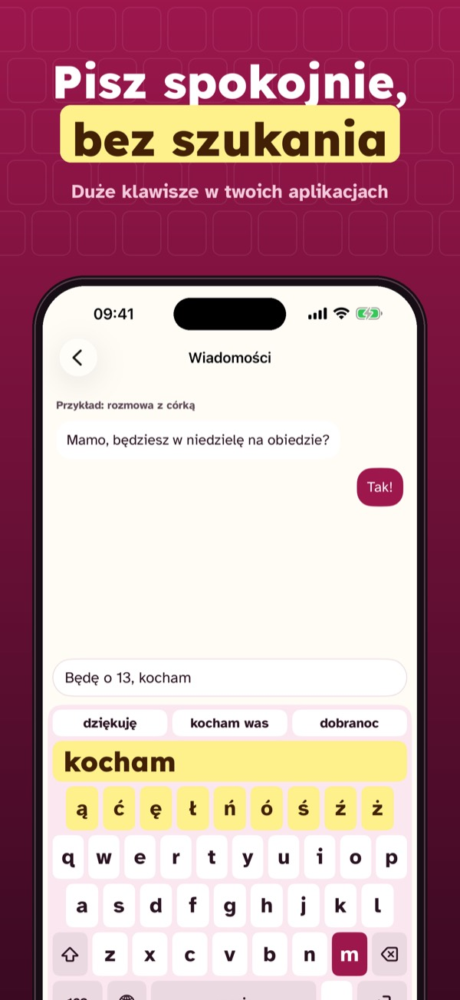
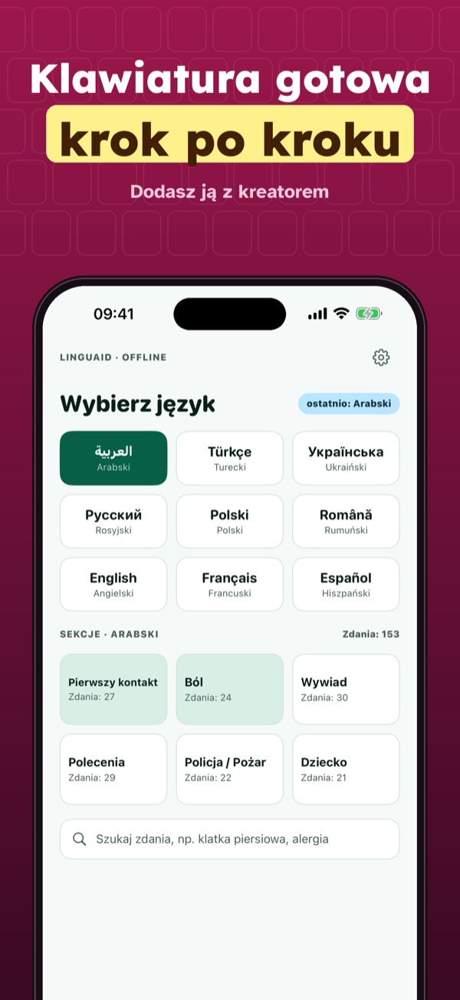
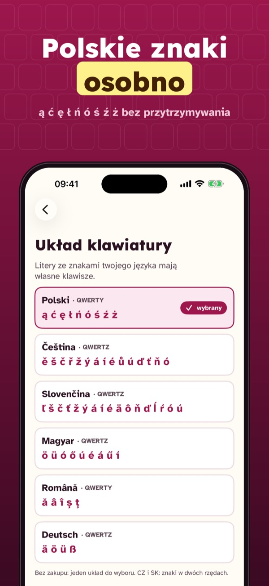
Tastino to klawiatura do iPhone'a z dużymi klawiszami w twoim języku. Polskie znaki mają własny rząd, więc nie trzeba ich przytrzymywać. Nad klawiszami widać duży podgląd ostatniej litery. W ekranie „Wypróbuj” telefon może też przeczytać literę na głos. W aplikacji jest kreator, który krok po kroku dodaje klawiaturę w Ustawieniach, i instrukcja do wysłania bliskiej osobie. Tastino działa bez pełnego dostępu: nie łączy się z internetem i nie zapisuje tego, co piszesz.
Bez zakupu: jeden układ, średnie klawisze, kreator i instrukcja. Tastino Plus to jednorazowy zakup: trzy rozmiary, wysoki kontrast, litera czytana na głos w ekranie „Wypróbuj” i wszystkie układy. Bez subskrypcji i bez reklam.
Tastino nie jest aplikacją Apple. W polach haseł i numerów telefonu iOS zawsze pokazuje własną klawiaturę. Aplikacja nie jest wyrobem medycznym.
Terms of Use (EULA): https://www.apple.com/legal/internet-services/itunes/dev/stdeula/
Privacy: https://apps.baytech.nl/tastino-cee/
Háčky a čárky bez držení
Velké klávesy a vlastní řada pro ě š č ř ž ý á í é ů ú. Velký náhled písmene, vysoký kontrast a zkoušení s hlasem. Bez plného přístupu: nic neopustí telefon.
Brzy v App Store
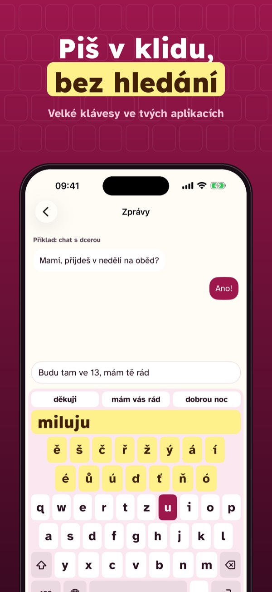
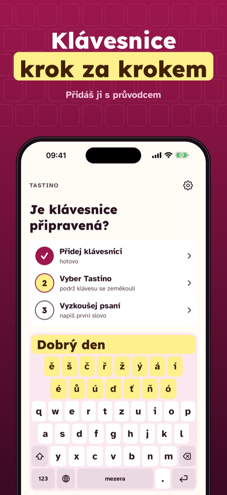
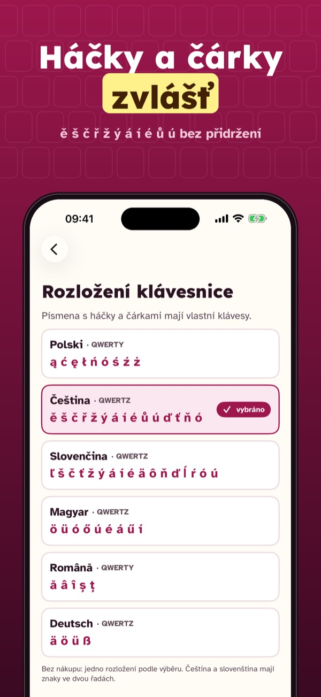
Tastino je klávesnice pro iPhone s velkými klávesami ve tvém jazyce. Písmena s háčky a čárkami mají vlastní řadu, takže je není třeba přidržovat. Nad klávesami je velký náhled posledního písmene a při zkoušení v aplikaci ho telefon může i přečíst nahlas. V aplikaci je průvodce, který klávesnici krok za krokem přidá v Nastavení, a návod, který pošleš blízkému. Tastino funguje bez plného přístupu: nepřipojuje se k internetu a neukládá, co píšeš.
Bez nákupu: jedno rozložení, střední klávesy, průvodce a návod. Tastino Plus je jednorázový nákup: tři velikosti, vysoký kontrast, písmeno nahlas při zkoušení a všechna rozložení. Bez předplatného a bez reklam.
Tastino není aplikací společnosti Apple. V polích pro hesla a telefonní čísla iOS vždy zobrazí vlastní klávesnici. Aplikace není zdravotnický prostředek.
Terms of Use (EULA): https://www.apple.com/legal/internet-services/itunes/dev/stdeula/
Privacy: https://apps.baytech.nl/tastino-cee/
Mäkčene a dĺžne bez držania
Veľké klávesy a vlastný rad pre ľ š č ť ž ý á í é ä ô ň. Veľký náhľad písmena, vysoký kontrast a skúšanie s hlasom. Bez plného prístupu: nič neopustí telefón.
Čoskoro v App Store
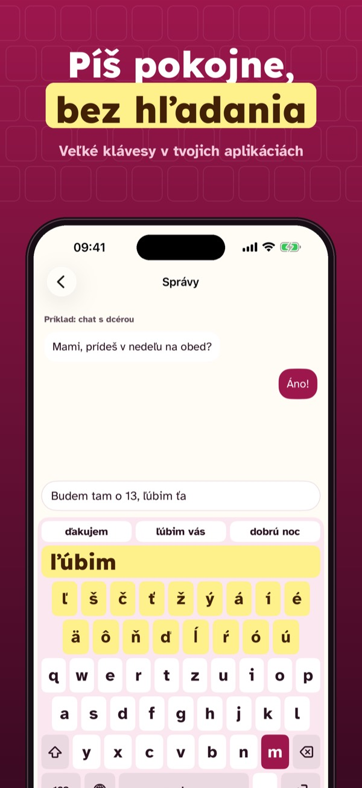
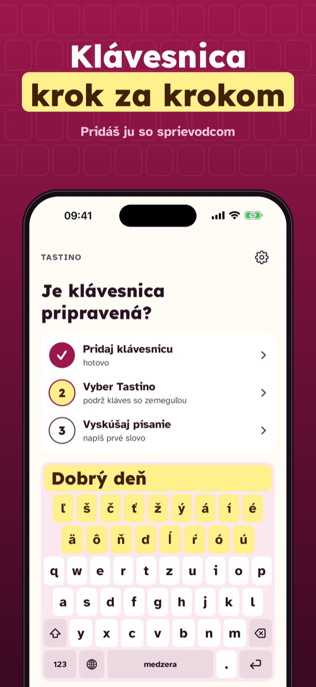
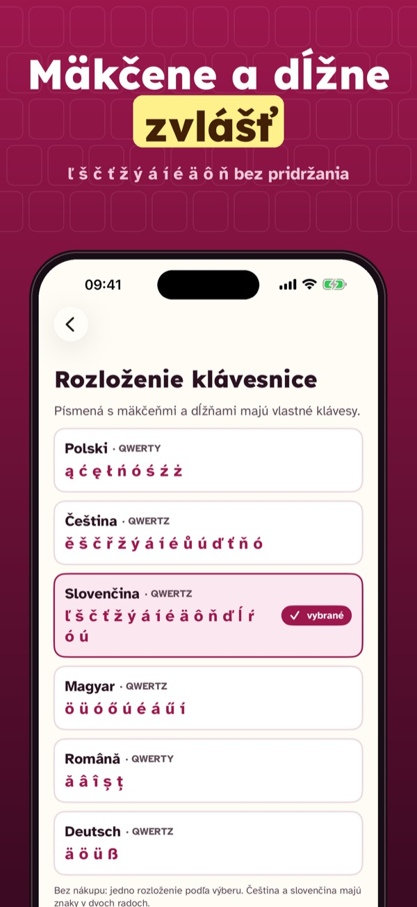
Tastino je klávesnica pre iPhone s veľkými klávesmi v tvojom jazyku. Písmená s mäkčeňmi a dĺžňami majú vlastný rad, takže ich netreba pridržiavať. Nad klávesmi je veľký náhľad posledného písmena a pri skúšaní v aplikácii ho telefón môže aj prečítať nahlas. V aplikácii je sprievodca, ktorý klávesnicu krok za krokom pridá v Nastaveniach, a návod, ktorý pošleš blízkemu. Tastino funguje bez plného prístupu: nepripája sa na internet a neukladá, čo píšeš.
Bez nákupu: jedno rozloženie, stredné klávesy, sprievodca a návod. Tastino Plus je jednorazový nákup: tri veľkosti, vysoký kontrast, písmeno nahlas pri skúšaní a všetky rozloženia. Bez predplatného a bez reklám.
Tastino nie je aplikáciou spoločnosti Apple. V poliach pre heslá a telefónne čísla iOS vždy zobrazí vlastnú klávesnicu. Aplikácia nie je zdravotnícka pomôcka.
Terms of Use (EULA): https://www.apple.com/legal/internet-services/itunes/dev/stdeula/
Privacy: https://apps.baytech.nl/tastino-cee/
Ékezetes betűk külön gombon
Nagy gombok és külön sor az ö ü ó ő ú é á ű í betűknek. Nagy betűelőnézet, erős kontraszt és gyakorlás hanggal. Teljes hozzáférés nélkül: minden a telefonon marad.
Hamarosan az App Store-ban
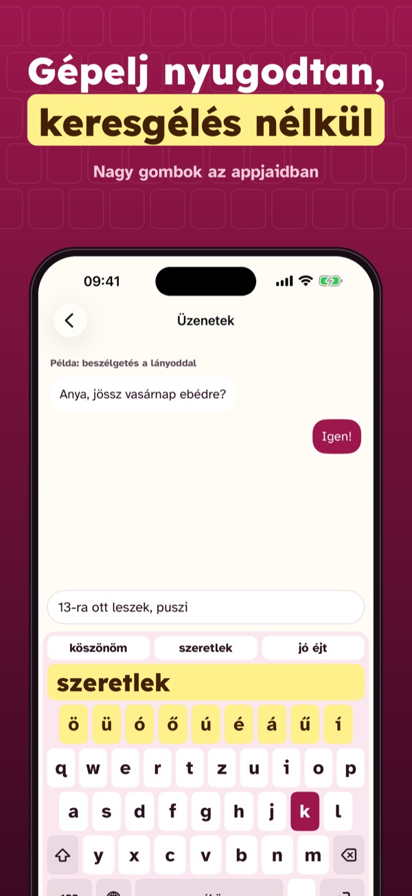
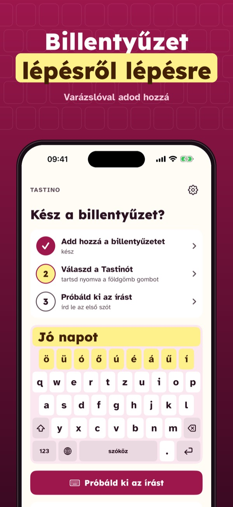
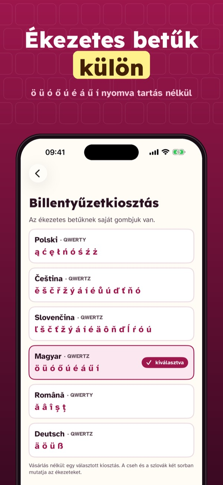
A Tastino iPhone-billentyűzet nagy gombokkal, a saját nyelveden. Az ékezetes betűknek saját soruk van, nem kell nyomva tartani őket. A gombok fölött nagy előnézet mutatja az utolsó betűt, és az app gyakorlófelületén a telefon fel is olvashatja. Az appban varázsló lépésről lépésre hozzáadja a billentyűzetet a Beállításokban, és van egy útmutató, amelyet elküldhetsz egy hozzátartozódnak. A Tastino teljes hozzáférés nélkül működik: nem csatlakozik az internetre, és nem menti, amit írsz.
Vásárlás nélkül: egy kiosztás, közepes gombok, varázsló és útmutató. A Tastino Plus egyszeri vásárlás: három méret, erős kontraszt, felolvasott betűk a gyakorlófelületen és minden kiosztás. Előfizetés és reklám nélkül.
A Tastino nem az Apple alkalmazása. Jelszó- és telefonszámmezőkben az iOS mindig a saját billentyűzetét mutatja. Az alkalmazás nem orvostechnikai eszköz.
Terms of Use (EULA): https://www.apple.com/legal/internet-services/itunes/dev/stdeula/
Privacy: https://apps.baytech.nl/tastino-cee/
Diacritice pe taste separate
Taste mari și un rând separat pentru ă â î ș ț. Previzualizare mare a literei, contrast ridicat și exercițiu cu voce. Fără acces complet: nimic nu iese din telefon.
În curând în App Store
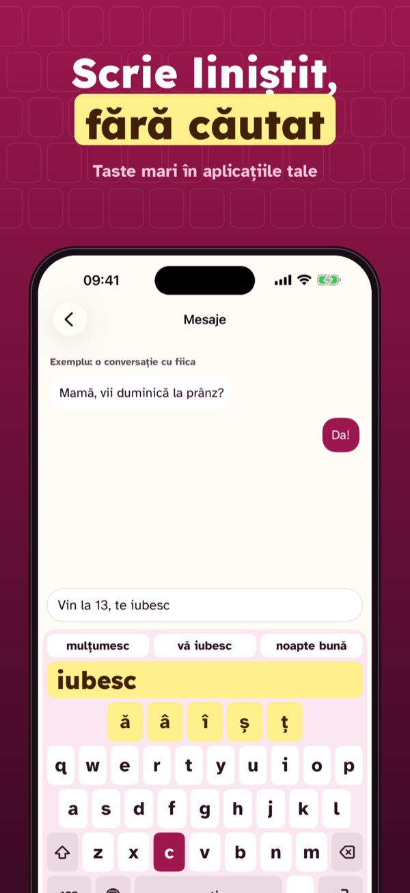
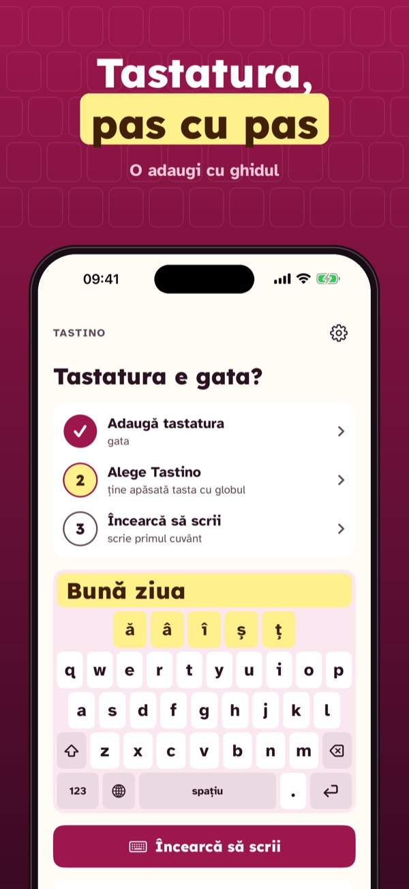
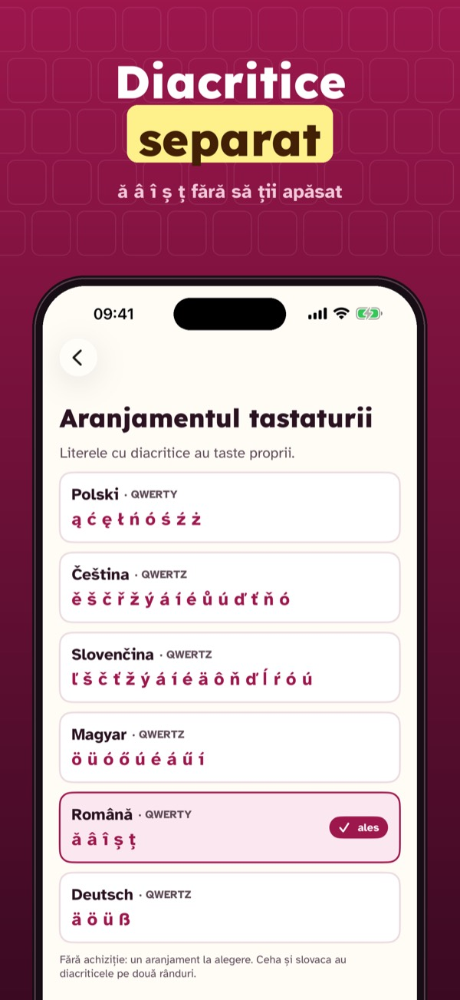
Tastino este o tastatură pentru iPhone cu taste mari, în limba ta. Literele cu diacritice au rândul lor, așa că nu trebuie să ții apăsat. Deasupra tastelor vezi mare ultima literă, iar în zona de probă din aplicație telefonul o poate și rosti. În aplicație, un ghid adaugă tastatura în Configurări pas cu pas și găsești instrucțiuni de trimis unei persoane dragi. Tastino funcționează fără acces complet: nu se conectează la internet și nu salvează ce scrii.
Fără cumpărare: un aranjament, taste medii, ghidul și instrucțiunile. Tastino Plus este o cumpărare unică: trei mărimi, contrast ridicat, litera rostită în zona de probă și toate aranjamentele. Fără abonament și fără reclame.
Tastino nu este o aplicație Apple. În câmpurile pentru parole și numere de telefon, iOS afișează mereu propria tastatură. Aplicația nu este un dispozitiv medical.
Terms of Use (EULA): https://www.apple.com/legal/internet-services/itunes/dev/stdeula/
Privacy: https://apps.baytech.nl/tastino-cee/
Umlaute auf eigenen Tasten
Große Tasten und eine eigene Reihe für ä ö ü ß. Große Buchstabenvorschau, hoher Kontrast und Üben mit Stimme. Ohne vollen Zugriff: nichts verlässt das iPhone.
Bald im App Store
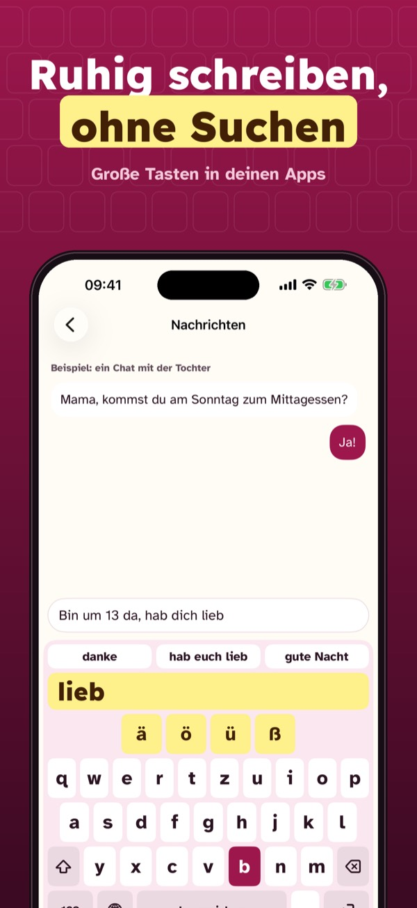
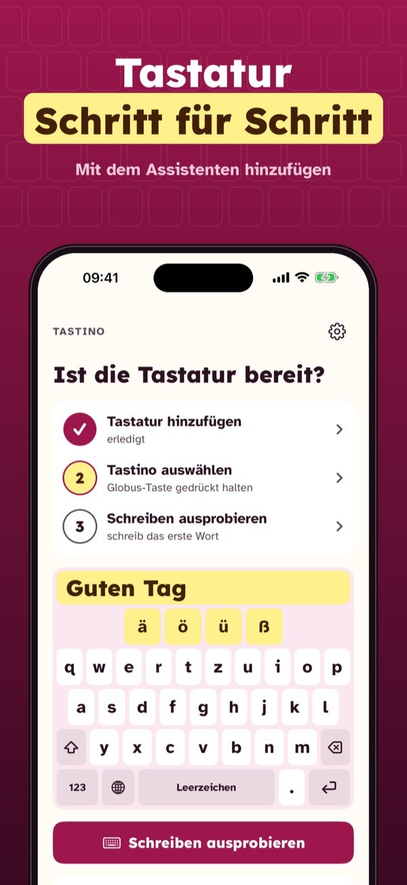
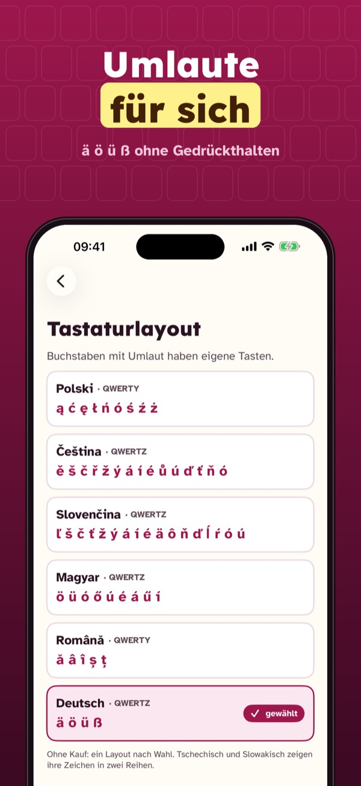
Tastino ist eine iPhone-Tastatur mit großen Tasten in deiner Sprache. Umlaute und ß haben eine eigene Reihe, du musst nichts gedrückt halten. Über den Tasten zeigt eine große Vorschau den letzten Buchstaben, im Probierbereich der App kann das iPhone ihn auch vorlesen. In der App fügt ein Assistent die Tastatur Schritt für Schritt in den Einstellungen hinzu, und eine Anleitung kannst du einem Angehörigen schicken. Tastino funktioniert ohne vollen Zugriff: keine Internetverbindung, und was du schreibst, wird nicht gespeichert.
Ohne Kauf: ein Layout, mittlere Tasten, Assistent und Anleitung. Tastino Plus ist ein Einmalkauf: drei Größen, hoher Kontrast, vorgelesene Buchstaben im Probierbereich und alle Layouts. Kein Abo, keine Werbung.
Tastino ist keine App von Apple. In Passwort- und Telefonnummernfeldern zeigt iOS immer die eigene Tastatur. Die App ist kein Medizinprodukt.
Terms of Use (EULA): https://www.apple.com/legal/internet-services/itunes/dev/stdeula/
Privacy: https://apps.baytech.nl/tastino-cee/